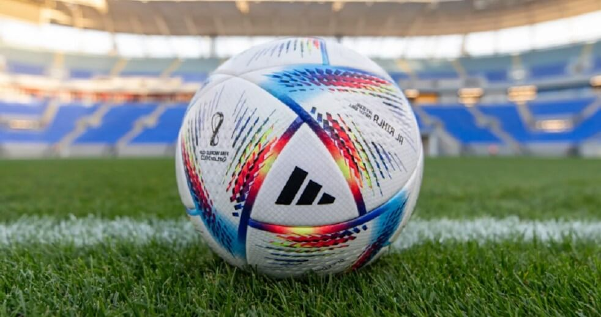

Pelota del Mundial Qatar 2022
Cómo es la ‘Al Rihla’
El nombre está en árabe y su traducción al español es "el viaje". Además, tal como informó la FIFA en el anuncio oficial, su diseño está inspirado en "la cultura, la arquitectura, las emblemáticas embarcaciones y la bandera de Qatar".
Los detalles de Al Rihla Pro
- Exterior 70 % poliuretano, 20 % poliéster reciclado, 10 % viscosa
- Cámara de caucho
- Exterior sin costuras con uniones termoselladas
- Requiere ser inflada
- Logo estampado de la Copa Mundial de la FIFA™
- Certificación FIFA Quality Pro
- Color del artículo: White / Pantone
- Número de artículo: H57783
Características de la pelota Al Rihla
- CRT-CORE: el corazón del esférico. Proporciona velocidad, precisión y consistencia en los partidos de mayor intensidad, y conserva al máximo la forma, el aire y la precisión en el rebote.
- SPEEDSHELL: un cuero de poliuretano texturizado con una novedosa forma con 20 paneles que mejora la precisión, la estabilidad y la rotación en el aire del balón gracias a macro y microtexturas, así como al contrarrelieve de la superficie.
- DISEÑO SUSTENTABLE: es el primer balón de los Mundiales fabricado exclusivamente con tintas y pegamentos de b ase acuosa.